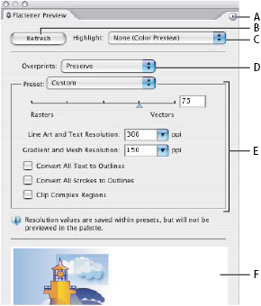

Flattener Preview panel overview
You use the preview options in the Flattener Preview panel to highlight the areas affected by flattening artwork. You can use this information to adjust the flattening options, and even use the panel to save flattener presets. To display the Flattener Preview panel, choose Window > Flattener Preview.

Flattener Preview panel
- A.
- Panel menu
- B.
- Refresh button
- C.
- Highlight menu
- D.
- Overprint menu
- E.
- Transparency flattening settings
- F.
- Preview area
You can control the speed and quality of the preview image by selecting an option from the panel menu. Select Quick Preview to compute the quickest preview; select Detailed Preview to add the option All Rasterized Regions to the Highlight pop‑up menu (this option is more performance-intensive to compute).
 Keep in mind that the Flattener Preview panel
is not intended for precise previewing of spot colors, overprints,
blending modes, and image resolution. Use Overprint Preview mode
in Illustrator to preview spot colors, overprints, and blending modes
as they will appear when output.
Keep in mind that the Flattener Preview panel
is not intended for precise previewing of spot colors, overprints,
blending modes, and image resolution. Use Overprint Preview mode
in Illustrator to preview spot colors, overprints, and blending modes
as they will appear when output.